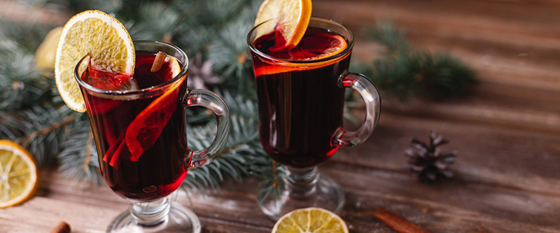

Глинтвейн

- TODO
Следующие ингредиенты положить в кастрюлю:
Нагреть, помешивая, до 70 градусов на среднем огне, дать настояться 15 минут.
 Назад к списку рецептов
Назад к списку рецептов
Следующие ингредиенты положить в кастрюлю:
Нагреть, помешивая, до 70 градусов на среднем огне, дать настояться 15 минут.
Назад к списку рецептов